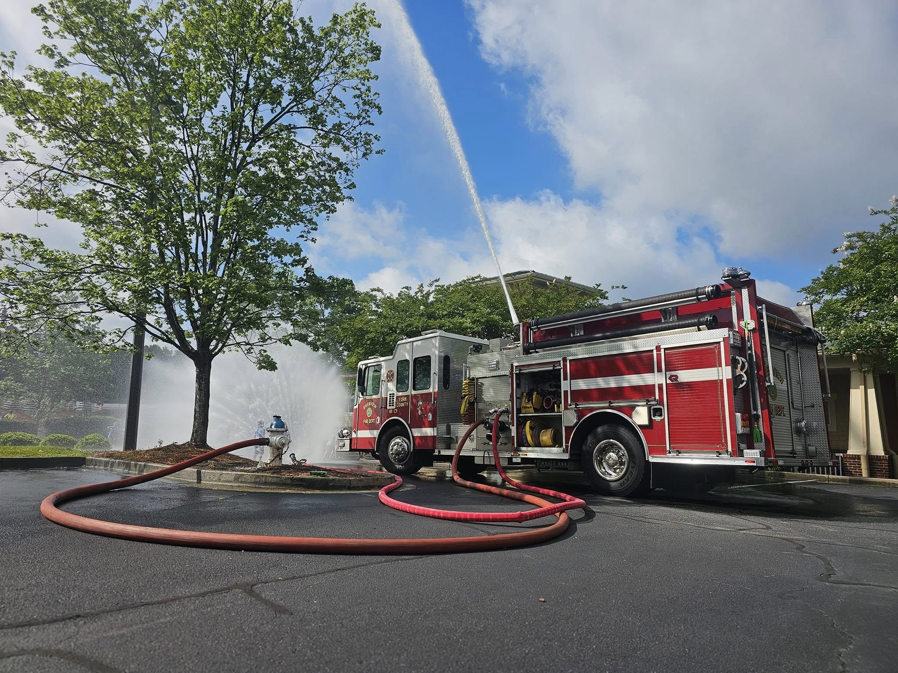

Engine 2 serves out of Station 2 as a versatile frontline pumper. It carries essential water, hoses, rescue tools, and medical equipment to quickly protect the growing residential and commercial areas in the Baxter Village area.
- 1250 GPM Pump
- 750 Gallon Water Tank
- Vehicle Extrication Tools